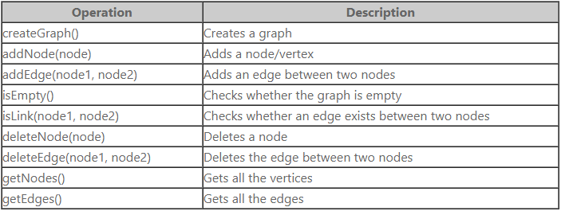
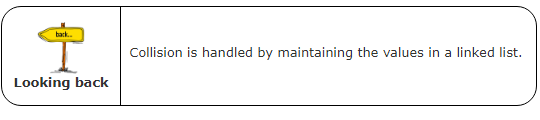
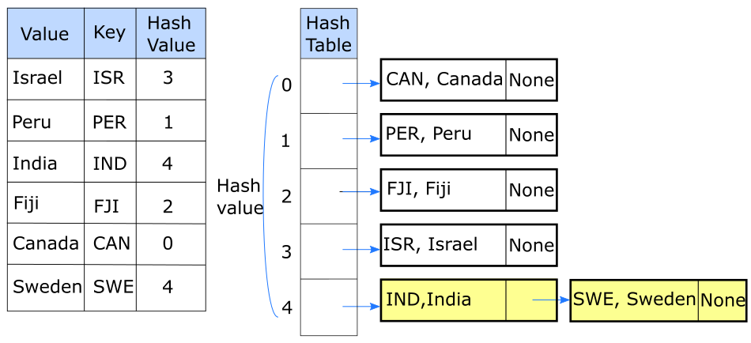

Data Structures and Algorithms using Python
In common words, Data Structures are storage containers in which elements can be stored, located, retrieved and deleted from, easily. Data Structures make the organization and management of large amounts of data efficiently.
Data Structures - Introduction
Google Search: When you provide a search term in Google and click on search, you get the search results in a fraction of second.
Google Maps: When you provide a source and destination in Google Maps and click on find route, you get multiple results based on time, current traffic etc. in a fraction of second.
Facebook: When you put a post in Facebook, irrespective of how many friends you are connected to, the post is immediately reflected in all their accounts.

In any application, organizing and storing data in a way or in a structure that is best suited to its usage is key to efficient access and processing of data.
There are some standard data structures that can be used to efficiently work with data. We can even customize them or build completely new ones to suit our application.
Data Structures
Data structures represent the way of arranging data in computer so that it can be accessed and used efficiently. It is all about grouping and storing collections of data in memory, operations that can be performed on these collections and algorithms that can be used for these operations.
There are different types of data structures like list, stack, queue etc. Each of them are suitable for specific type of tasks.

List - Introduction
Scenario: It was a Saturday morning and Maria was in the grocery shop with her list of grocery items. The list kept on changing as she moved from one section of the shop to another. She added few items, removed few and kept on scanning the list. She in fact, started with a list of 4 items and ended up buying many more.
Here, we need to represent Maria’s list as a sequence of grocery items. The sequence keeps changing frequently.
In this case, we can use list data structure to represent Maria’s list of grocery items.
List:- Is a linear data structure
- Is used to store a sequence of values
- It can grow and shrink dynamically based on need
Common operations on list are:add,insert,delete,display
List can be implemented using array or linked list. Let’s begin with the array implementation.
List using array
Array is a data type which is of fixed capacity and can store a collection of elements. However we can use it to implement the list data structure.
For implementation we will be using list data type in python which is internally a dynamic array which can grow and shrink based on the elements added to or removed from it. Initially, it is created with a certain capacity and based on elements getting added or removed, the capacity is increased or decreased respectively.
#Do not remove the below import statement
import sys
'''This function provides the capacity, size and space left in the list.
You can invoke it to get the details of the list'''
def list_details(lst):
#Number of elements that can be stored in the list
print("Capacity:", (sys.getsizeof(lst)-36)//4)
#Number of elements in the list
print("Size:", len(lst))
#Number of elements that can be accommodated in the space left
print("Space Left:", ((sys.getsizeof(lst)-36) - len(lst*4))//4)
#formula changes based on the system architecture
#(size-36)/4 for 32 bit machines and
#(size-64)/8 for 64 bit machines
# 36, 64 - size of an empty list based on machine
# 4, 8 - size of a single element in the list based on machine
marias_lst=[]
print("Empty list created!!!")
print("List details:")
list_details(marias_lst)
OP:
Empty list created!!!
List details:
Capacity: 7
Size: 0
Space Left: 7
Add operation
When an element is added to an empty list in Python, a block of memory is allocated and element is added at index position 0(first element). The remaining memory is considered to be reserved space which will be used later for addition or insertion of elements.
Algorithm steps:
add(element):
1. When the list is initially created, it is created with a certain capacity.
2. While adding the elements, if the list is filled to the capacity,
a. Create a new list with increased capacity
b. Copy the elements of initial list to the new list
3. Add the element to the end of the existing elements in the list
append() method of Python list implicitly implements the above algorithm.
Note: The space after adding the element can be used for further adding or inserting the elements. However, they should be considered only as reserved space. We cannot directly access that space.
marias_lst=[]
print("Empty list created!!!")
print("List details:")
list_details(marias_lst)
marias_lst.append("Sugar")
marias_lst.append("Sugar")
print("Maria's list after adding Sugar:")
print(marias_lst)
print("List details:")
list_details(marias_lst)
OP:
Empty list created!!!
List details:
Capacity: 7
Size: 0
Space Left: 7
Maria's list after adding Sugar:
['Sugar', 'Sugar']
List details:
Capacity: 15
Size: 2
Space Left: 13
Insert Operation


Algorithm steps:
insert(pos, element):
1. If the list is filled to capacity
a. Create a new list with increased capacity
b. Copy the elements of initial list to the new list
2. Shift right all the existing elements from index position (pos) by 1 position
3. Insert the element at index position (pos)
insert(pos,element) method of Python list implicitly implements the above algorithm.
Note: The space after adding the element can be used for further adding or inserting the elements. However, they should be considered only as reserved space. We cannot directly access that space.
marias_lst=[]
marias_lst.append("Sugar")
marias_lst.append("Tea Bags")
marias_lst.append("Milk")
marias_lst.insert(1,"Salt")
Delete operation
Algorithm steps:
delete(pos):
1. Shift left all the existing elements from index
position (pos+1) by 1 position
Note: Capacity will be decreased whenever remaining number
of elements fall below certain value
pop(pos) method of Python list implicitly implements the above algorithm.
List using Array - observations

Self Study
When we look up for employees(s) by keying in his/her name in a directory of an organization, it retives the objects of all employees whose details have the keyed name in it and stores the employee objects in a list before displaing it.
Here is a code that implements the look up functionality of an Organization's Directory.
class Employee:
def __init__(self, name, emp_id, email_id):
self.__name=name
self.__emp_id=emp_id
self.__email_id=email_id
def get_name(self):
return self.__name
def get_emp_id(self):
return self.__emp_id
def get_email_id(self):
return self.__email_id
class OrganizationDirectory:
def __init__(self,emp_list):
self.__emp_list=emp_list
def lookup(self,key_name):
result_list=[]
for emp in self.__emp_list:
if(key_name in emp.get_name()):
result_list.append(emp)
self.display(result_list)
return result_list
def display(self,result_list):
print("Search results:")
for emp in result_list:
print(emp.get_name()," ", emp.get_emp_id()," ",emp.get_email_id())
emp1=Employee("Kevin",24089, "Kevin_xyz@organization.com")
emp2=Employee("Jack",56789,"Jack_xyz@organization.com")
emp3=Employee("Jackson",67895,"Jackson_xyz@organization.com")
emp4=Employee("Henry Jack",23456,"Jacky_xyz@organization.com")
emp_list=[emp1,emp2,emp3,emp4]
org_dir=OrganizationDirectory(emp_list)
#Search for an employee
org_dir.lookup("Jack")
OP:
Search results:
Jack 56789 Jack_xyz@organization.com
Jackson 67895 Jackson_xyz@organization.com
Henry Jack 23456 Jacky_xyz@organization.com
List using Array - Memory Usage
- List using array may involve shifting of elements in both insert and delete operations.
- When capacity of the array is increased during addition or insertion of elements, it may result in wastage of memory in the form of reserved space.
List using Linked List - Introduction
As Maria's list is going to have frequent additions and deletions, it may not be a good choice to implement it using arrays. There is one more implementation for list which is using Linked List.
A linked list consists of a group of nodes which together represent a sequence or a list. Each node will have a data part which holds the actual data and an address part which holds the link to the next node. The first node in the list is known as head node and the last node is known as tail node. Unlike array, in linked list, the nodes need not be stored in contiguous memory locations.

The node in the linked list can be represented as follows:

Creation of a node which contains item name, “Sugar”.
class Node:
def __init__(self,data):
self.__data=data
self.__next=None
def get_data(self):
return self.__data
def set_data(self,data):
self.__data=data
def get_next(self):
return self.__next
def set_next(self,next_node):
self.__next=next_node
item_node=Node("Sugar")
print(item_node.get_data())
OP:
Sugar
Creation
To link the nodes and create a linked list, let’s create a new class, LinkedList with two attributes, head and tail both initialized to None as shown below.
class LinkedList:
def __init__(self):
self.__head=None
self.__tail=None
def get_head(self):
return self.__head
def get_tail(self):
return self.__tail
Display Operation
Assume that Maria's list is maintained as a linked list and she wants to traverse through the list and display the items in the list starting from the first item.
Algorithm steps:
display()
1. Call the head node as temp
2. While temp is not None,
a. Display temp’s data
b. Make the next node as temp
Add Operation
Maria wants to add the item, "Sugar" to the linked list and after that add "Tea Bags" to the end of the linked list.
Algorithm steps:
add(data)
1. Create a new node with the data
2. If the linked list is empty (head node is not referring to any other node),
make the head node and the tail node refer to the new node
3. Otherwise,
a. Make the tail node’s link refer to new node
b. Call the new node as tail node
Insert Operation
Maria wants to insert an item, Salt after Sugar in the linked list.
Algorithm steps:
insert(data,data_before)
1. Create a new node with the given data
2. If the data_before is None,
a. Make the new node's link refer to head node
b. Call the new node as head node
c. If the new node's link is None, make it the tail node
3. Else
a. Find the node with data_before, once found consider it as node_before
b. Make the new node’s link refer to node_before’s link.
c. Make the node_before’s link refer to new node
d. If new node’s link is None, make it the tail node
4. If node with data_before is not found, display appropriate error message
Delete Operation
Maria wants to delete the items, Sugar and Milk from linked list.
Algorithm steps:
delete(data):
1. Find the node with the given data. If found,
a. If the node to be deleted is head node, make the next node as head node
1. If it is also the tail node, make the tail node as None
b. Otherwise,
1. Traverse till the node before the node to be deleted, call it temp
2. Make temp’s link refer to node’s link.
3. If the node to be deleted is the tail node, call the temp as tail node
4. Make the node's link as None
2. If the node to be deleted is not found, display appropriate error message
Recap
Shift operations are not required to insert and delete the elements to or from the linked list. It can be done easily by rearranging the links.
Extra memory is required to store the link/address part in every node apart from the data.
The elements cannot be accessed randomly, we have to traverse sequentially starting from the first node to access any element in the list.

Assume that the below blocks of memory are available for dynamic memory allocation. As shown, the blocks are linked one after the other using the linked list. At a point of time, few blocks may be allocated and few may be free.

In this case, maximum contiguous free blocks is 30% and total free blocks is 50%.
If a program now requests for 4 blocks of memory, OS will not be able to allocate as it does not have 4 contiguous free blocks (blocks in white) available. OS regularly performs memory compaction to bring together all the free blocks.
Let’s see how this is performed.
After memory compaction, maximum contiguous free blocks is 50% and total free blocks is 50%.
implementation of memory compaction process
class Node:
def __init__(self,data):
self.__data=data
self.__next=None
def get_data(self):
return self.__data
def set_data(self,data):
self.__data=data
def get_next(self):
return self.__next
def set_next(self,next_node):
self.__next=next_node
class LinkedList:
def __init__(self):
self.__head=None
self.__tail=None
def get_head(self):
return self.__head
def get_tail(self):
return self.__tail
#This method is added for this tryout alone
def set_head(self,new_node):
self.__head=new_node
#This method is added for this tryout alone
def set_tail(self,new_node):
self.__tail=new_node
def add(self,data):
new_node=Node(data)
if(self.__head is None):
self.__head=self.__tail=new_node
else:
self.__tail.set_next(new_node)
self.__tail=new_node
def insert(self,data,data_before):
new_node=Node(data)
if(data_before==None):
new_node.set_next(self.__head)
self.__head=new_node
if(new_node.get_next()==None):
self.__tail=new_node
else:
node_before=self.find_node(data_before)
if(node_before is not None):
new_node.set_next(node_before.get_next())
node_before.set_next(new_node)
if(new_node.get_next() is None):
self.__tail=new_node
else:
print(data_before,"is not present in the Linked list")
def display(self):
temp=self.__head
while(temp is not None):
print(temp.get_data())
temp=temp.get_next()
def find_node(self,data):
temp=self.__head
while(temp is not None):
if(temp.get_data()==data):
return temp
temp=temp.get_next()
return None
def delete(self,data):
node=self.find_node(data)
if(node is not None):
if(node==self.__head):
if(self.__head==self.__tail):
self.__tail=None
self.__head=node.get_next()
else:
temp=self.__head
while(temp is not None):
if(temp.get_next()==node):
temp.set_next(node.get_next())
if(node==self.__tail):
self.__tail=temp
node.set_next(None)
break
temp=temp.get_next()
else:
print(data,"is not present in Linked list")
#You can use the below __str__() to print the elements of the DS object while debugging
def __str__(self):
temp=self.__head
msg=[]
while(temp is not None):
msg.append(str(temp.get_data()))
temp=temp.get_next()
msg=" ".join(msg)
msg="Linkedlist data(Head to Tail): "+ msg
return msg
def find_total_nodes(mem_block):
temp=mem_block.get_head()
total_nodes=0
while(temp is not None):
total_nodes+=1
temp=temp.get_next()
return total_nodes
def maximum_contiguous_free_blocks(mem_block):
temp=mem_block.get_head()
total_nodes=find_total_nodes(mem_block)
free_list=[]
free_contiguous_nodes=0
if(temp.get_data()=="Free"):
free_contiguous_nodes+=1
prev_data=temp.get_data()
temp=temp.get_next()
while(temp is not None):
if(temp.get_data()=="Free"):
if(prev_data=="Free"):
free_contiguous_nodes+=1
else:
free_list.append(free_contiguous_nodes)
free_contiguous_nodes=1
else:
free_list.append(free_contiguous_nodes)
free_contiguous_nodes=0
prev_data=temp.get_data()
temp=temp.get_next()
free_list.append(free_contiguous_nodes)
max_free_contiguous_nodes=max(free_list)
return((max_free_contiguous_nodes/total_nodes)*100)
def total_free_blocks(mem_block):
temp=mem_block.get_head()
total_blocks=find_total_nodes(mem_block)
total_free_blocks=0
while(temp is not None):
if(temp.get_data()=="Free"):
total_free_blocks+=1
temp=temp.get_next()
return ((total_free_blocks/total_blocks)*100)
def memory_compaction(mem_block):
temp=mem_block.get_head()
prev_occupied=None
prev_free=None
occupied=None
free=None
if(temp.get_data()=="Occupied"):
occupied=temp
prev_occupied=temp
elif(temp.get_data()=="Free"):
free=temp
prev_free=temp
temp=temp.get_next()
while(temp is not None):
if(temp.get_data()=="Occupied"):
if(occupied==None):
occupied=temp
if(prev_occupied==None):
prev_occupied=temp
else:
prev_occupied.set_next(temp)
prev_occupied=temp
elif(temp.get_data()=="Free"):
if(free==None):
free=temp
if(prev_free==None):
prev_free=temp
else:
prev_free.set_next(temp)
prev_free=temp
temp=temp.get_next()
prev_occupied.set_next(free)
prev_free.set_next(None)
mem_block.set_head(occupied)
mem_block.set_tail(prev_free)
mem_block=LinkedList()
mem_block.add("Occupied")
mem_block.add("Free")
mem_block.add("Occupied")
mem_block.add("Occupied")
mem_block.add("Free")
mem_block.add("Occupied")
mem_block.add("Free")
mem_block.add("Free")
mem_block.add("Free")
mem_block.add("Free")
print("Before compaction")
print("_________________")
print("Max. contiguous free blocks:", maximum_contiguous_free_blocks(mem_block),"%")
print("Total free blocks:",total_free_blocks(mem_block),"%")
memory_compaction(mem_block)
print()
print("After compaction")
print("________________")
print("Max. contiguous free blocks:", maximum_contiguous_free_blocks(mem_block),"%")
print("Total free blocks:",total_free_blocks(mem_block),"%")
OP:
Before compaction
_________________
Max. contiguous free blocks: 40.0 %
Total free blocks: 60.0 %
After compaction
________________
Max. contiguous free blocks: 60.0 %
Total free blocks: 60.0 %
List using Array vs Linked List
| Operation | List using Array | List using Linked List |
|---|---|---|
| Insert | Shifting of elements are required | Shifting of elements are not required |
| Delete | Shifting of elements are required | Shifting of elements are not required |
| Memory | Elements are stored in contiguous memory locations | Elements need not necessarily be stored in contiguous memory locations |
| Access | Both random and sequential | Only sequential |
We may choose between array or linked list for implementing list based on the problem statement. If the problem has frequent insertions and deletions, prefer linked list. Otherwise, if it involves only accessing the elements at random or in sequence with less number of insertions and deletions, use array.
Stack - Introduction
This pile of shirts arranged one on top of the other which follows Last-In-First-Out (LIFO) principle is known as Stack.
Operations possible on the stack are:
- Push or insert an element to the top of the stack
- Pop or remove an element from top of the stack
Let's have a class Stack as follows:

Push Operation
Algorithm steps:
push(data):
1. Check whether the stack is full. If full, display appropriate message
2. If not,
a. increment top by one
b. Add the element at top position in the elements array
Pop operation
Algorithm steps:
pop:
1. Check whether the stack is empty. If empty, display appropriate message
2. If not,
a. Retrieve data at the top of the stack
b. Decrement top by 1
c. Return the retrieved data

Application areas
Stack is used to implement bracket matching algorithm for arithmetic expression evaluation and also in implementation of method calls.
Stack - Self Study

Here is a text written in MS-Word. Observe how the text changed on click of Ctrl-Z and Ctrl-Y.
Here is a code that simulates undo- redo operation.
class Stack:
def __init__(self,max_size):
self.__max_size=max_size
self.__elements=[None]*self.__max_size
self.__top=-1
def is_full(self):
if(self.__top==self.__max_size-1):
return True
return False
def is_empty(self):
if(self.__top==-1):
return True
return False
def push(self,data):
if(self.is_full()):
print("The stack is full!!")
else:
self.__top+=1
self.__elements[self.__top]=data
def pop(self):
if(self.is_empty()):
print("The stack is empty!!")
else:
data= self.__elements[self.__top]
self.__top-=1
return data
def display(self):
if(self.is_empty()):
print("The stack is empty")
else:
index=self.__top
while(index>=0):
print(self.__elements[index])
index-=1
def get_max_size(self):
return self.__max_size
#You can use the below __str__() to print the elements of the DS object while debugging
def __str__(self):
msg=[]
index=self.__top
while(index>=0):
msg.append((str)(self.__elements[index]))
index-=1
msg=" ".join(msg)
msg="Stack data(Top to Bottom): "+msg
return msg
def remove():
global clipboard,undo_stack
data=clipboard[len(clipboard)-1]
clipboard.remove(data)
undo_stack.push(data)
print("Remove:",clipboard)
def undo():
global clipboard,undo_stack,redo_stack
if(undo_stack.is_empty()):
print("There is no data to undo")
else:
data=undo_stack.pop()
clipboard.append(data)
redo_stack.push(data)
print("Undo:",clipboard)
def redo():
global clipboard, undo_stack,redo_stack
if(redo_stack.is_empty()):
print("There is no data to redo")
else:
data=redo_stack.pop()
if(data not in clipboard):
print("There is no data to redo")
redo_stack.push(data)
else:
clipboard.remove(data)
undo_stack.push(data)
print("Redo:",clipboard)
clipboard=["A","B","C","D","E","F"]
undo_stack=Stack(len(clipboard))
redo_stack=Stack(len(clipboard))
remove()
undo()
redo()
OP:
Remove: ['A', 'B', 'C', 'D', 'E']
Undo: ['A', 'B', 'C', 'D', 'E', 'F']
Redo: ['A', 'B', 'C', 'D', 'E']
Queue - Introduction
Peter and Maria went for a movie one day. In the multiplex, the tickets were issued on first-come-first-serve basis and people were standing behind each other waiting for their turn. So they went to the back and stood behind the last person waiting for the ticket
Here, the people are standing one behind the other and they are serviced based on First-In-First-Out (FIFO) mechanism. Such an arrangement is known as Queue.
Operations possible on the queue are:
- En-queue or add an element to the end of the queue
- De-queue or remove an element from the front of the queue
Let's have a class, Queue as follows:


The queue at the multiplex when there are no people.
The queue at the multiplex when filled

Enqueue Operation
Algorithm steps:
enqueue (data):
1. Check whether queue is full. If full, display appropriate message
2. If not,
a. increment rear by one
b. Add the element at rear position in the elements array
Dequeue Operation
Algorithm steps:
dequeue()
1. Check whether the queue is empty. If it is empty, display appropriate message
2. If not,
a. Retrieve data at the front of the queue
b. Increment front by 1
c. Return the retrieved data

Queue - Self study
For example: Suppose you have issued print commands for 3 documents in the order doc1, followed by doc2 and doc3. The print queue will be populated as shown below:

doc-n where doc is the document sent for printing and n is the number of pages in the document. For example, doc2-10 means doc2 is to be printed and it has 10 pages.
Here is a code that simulates print queue operation. Go through the code and observe how the queue is used in this implementation.
class Queue:
def __init__(self,max_size):
self.__max_size=max_size
self.__elements=[None]*self.__max_size
self.__rear=-1
self.__front=0
def is_full(self):
if(self.__rear==self.__max_size-1):
return True
return False
def is_empty(self):
if(self.__front>self.__rear):
return True
return False
def enqueue(self,data):
if(self.is_full()):
print("Queue is full!!!")
else:
self.__rear+=1
self.__elements[self.__rear]=data
def dequeue(self):
if(self.is_empty()):
print("Queue is empty!!!")
else:
data=self.__elements[self.__front]
self.__front+=1
return data
def display(self):
for index in range(self.__front, self.__rear+1):
print(self.__elements[index])
def get_max_size(self):
return self.__max_size
#You can use the below __str__() to print the elements of the DS object while debugging
def __str__(self):
msg=[]
index=self.__front
while(index<=self.__rear):
msg.append((str)(self.__elements[index]))
index+=1
msg=" ".join(msg)
msg="Queue data(Front to Rear): "+msg
return msg
def send_for_print(doc):
global print_queue
if(print_queue.is_full()):
print("Queue is full")
else:
print_queue.enqueue(doc)
print(doc,"sent for printing")
def start_printing():
global print_queue
while(not print_queue.is_empty()):
doc=print_queue.dequeue()
global pages_in_printer
for i in range(0,len(doc)):
if(doc[i]=="-"):
no_of_pages=int(doc[i+1:])
break
if(no_of_pages<=pages_in_printer):
print(doc,"printed")
pages_in_printer-=no_of_pages
print("Remaining no. of pages in printer:", pages_in_printer)
else:
print("Couldn't print",doc[:i],". Not enough pages in the printer.")
pages_in_printer=12
print_queue=Queue(10)
send_for_print("doc1-5")
send_for_print("doc2-3")
send_for_print("doc3-6")
start_printing()
OP:
doc1-5 sent for printing
doc2-3 sent for printing
doc3-6 sent for printing
doc1-5 printed
Remaining no. of pages in printer: 7
doc2-3 printed
Remaining no. of pages in printer: 4
Couldn't print doc3 . Not enough pages in the printer.
Linked List & Queue -
class Queue:
def __init__(self,max_size):
self.__max_size=max_size
self.__elements=[None]*self.__max_size
self.__rear=-1
self.__front=0
def is_full(self):
if(self.__rear==self.__max_size-1):
return True
return False
def is_empty(self):
if(self.__front>self.__rear):
return True
return False
def enqueue(self,data):
if(self.is_full()):
print("Queue is full!!!")
else:
self.__rear+=1
self.__elements[self.__rear]=data
def dequeue(self):
if(self.is_empty()):
print("Queue is empty!!!")
else:
data=self.__elements[self.__front]
self.__front+=1
return data
def display(self):
for index in range(self.__front, self.__rear+1):
print(self.__elements[index])
def get_max_size(self):
return self.__max_size
#You can use the below __str__() to print the elements of the DS object while debugging
def __str__(self):
msg=[]
index=self.__front
while(index<=self.__rear):
msg.append((str)(self.__elements[index]))
index+=1
msg=" ".join(msg)
msg="Queue data(Front to Rear): "+msg
return msg
class Node:
def __init__(self,data):
self.__data=data
self.__next=None
def get_data(self):
return self.__data
def set_data(self,data):
self.__data=data
def get_next(self):
return self.__next
def set_next(self,next_node):
self.__next=next_node
class LinkedList:
def __init__(self):
self.__head=None
self.__tail=None
def get_head(self):
return self.__head
def get_tail(self):
return self.__tail
def add(self,data):
new_node=Node(data)
if(self.__head is None):
self.__head=self.__tail=new_node
else:
self.__tail.set_next(new_node)
self.__tail=new_node
def insert(self,data,data_before):
new_node=Node(data)
if(data_before==None):
new_node.set_next(self.__head)
self.__head=new_node
if(new_node.get_next()==None):
self.__tail=new_node
else:
node_before=self.find_node(data_before)
if(node_before is not None):
new_node.set_next(node_before.get_next())
node_before.set_next(new_node)
if(new_node.get_next() is None):
self.__tail=new_node
else:
print(data_before,"is not present in the Linked list")
def display(self):
temp=self.__head
while(temp is not None):
print(temp.get_data())
temp=temp.get_next()
def find_node(self,data):
temp=self.__head
while(temp is not None):
if(temp.get_data()==data):
return temp
temp=temp.get_next()
return None
def delete(self,data):
node=self.find_node(data)
if(node is not None):
if(node==self.__head):
if(self.__head==self.__tail):
self.__tail=None
self.__head=node.get_next()
else:
temp=self.__head
while(temp is not None):
if(temp.get_next()==node):
temp.set_next(node.get_next())
if(node==self.__tail):
self.__tail=temp
node.set_next(None)
break
temp=temp.get_next()
else:
print(data,"is not present in Linked list")
#You can use the below __str__() to print the elements of the DS object while debugging
def __str__(self):
temp=self.__head
msg=[]
while(temp is not None):
msg.append(str(temp.get_data()))
temp=temp.get_next()
msg=" ".join(msg)
msg="Linkedlist data(Head to Tail): "+ msg
return msg
def fun(input_list1,input_list2):
temp1 = input_list1.get_head()
temp2 = input_list2.get_head()
output_queue = Queue(10)
while(temp1 != None and temp2 != None):
if(temp1.get_data() < temp2.get_data()):
output_queue.enqueue(temp1.get_data())
temp1 = temp1.get_next()
elif(temp1.get_data() > temp2.get_data()):
output_queue.enqueue(temp2.get_data())
temp2 = temp2.get_next()
else:
output_queue.enqueue(temp2.get_data())
temp1 = temp1.get_next()
temp2 = temp2.get_next()
while(temp1 != None):
output_queue.enqueue(temp1.get_data())
temp1 = temp1.get_next()
while(temp2 != None):
output_queue.enqueue(temp2.get_data())
temp2 = temp2.get_next()
return output_queue
list1=LinkedList()
list1.add(1)
list1.add(2)
list1.add(5)
list1.add(7)
list1.add(8)
list1.add(10)
list2=LinkedList()
list2.add(3)
list2.add(4)
list2.add(6)
list2.add(9)
res_queue=fun(list1,list2)
res_queue.display()
OP:
1
2
3
4
5
6
7
8
9
10
Non - Linear Data Structures - Introduction
Scenarios
The network engineers of a company are trying to connect all the computers (numbered 1 to 9) in the company network. They also need to provide a path to traverse from one computer to the other.
Maria is planning a vacation trip to Europe and is trying to choose the best air route from the available options based on the travel time in hrs. Option-1: Bangalore(4hrs) -> Dubai(7hrs)-> Paris(1hr)-> London; Option-2: Bangalore(3hrs)->Delhi(8hrs)->Frankfurt(2hrs)->London; Option-3: Bangalore(4hrs)->Dubai(7hrs)->London
 s
s
Graph
In these scenarios, we understand that we cannot use any of the linear data structures like array, linked list, stack or queue to represent it. Here, we need an arrangement which allows to have a set of vertices and edges between them. Such a data structure is known as graph.
Graph is a non-linear data structure having a set of vertices(or nodes) and edges between vertices. It can have any number of edges and nodes and any node can be connected to any other node by an edge. It can be implemented using arrays or linked lists.

Graph operations
Common operations possible on graph are listed below:
Graph applications
Listed below are two common usage scenarios of graphs:
1. Find the shortest path where path is defined as a sequence of edges which connect a sequence of vertices . Shortest path is used in a weighted graph to find the path that results in the shortest path from a source node to a destination node. It is used to find shortest routes, profitable routes etc.
2. Detect a cycle in a graph. Cycle consists of a sequence of vertices starting and ending at the same vertex with no repetitions of vertices and edges other than the starting and ending vertex.
self study
Google Maps uses weighted graph to represent a map where each node is a city, edge is a road connecting two cities and weight can be the distance between the two cities.
Facebook uses directed graph to represent people and their relationships where each node represents a person/activity and edge represents the relationships between two people (liked by, tagged by, friend of etc.)
Tree
Scenario-1: Family Tree

Scenario-2: Organization Structure

This type of non-linear arrangement where a node is attached to one or more nodes directly beneath it, is a special type of graph known as tree. In this data structure, the top most node is called the root and the connections between nodes are called edges. Nodes that have no children are called leaf nodes and non-root and non-leaf nodes are called internal nodes.
Trees are used extensively in searching and sorting applications.

Tree - Self study
Data Structures and Algorithms using Python - Part 2
In "Data Structures & Algorithms using Python - Part 1" course the following topics have been covered:
- Need and benefits of data structures
- Various linear types of data structures that are commonly used like List, Stack, Queue etc
- Operations on linear data structures
- Application areas of linear data structures
- Insights into few non - linear data structures.
The search will involve character by character searching of each customer name followed by the 11 digit account number. i.e. 26 possibilities for each character of a variable length string followed by 10 possibilities for each of the 11 digits.
In these kind of situations, hashing can be used to arrive at a fixed length shorter hash value from the key. Searching a fixed length shorter hash value is definitely much faster than searching for the original key value.
Hashing
Hashing is the process of transforming a set of characters (key) into a shorter fixed length integer value. This shorter fixed length integer value which represents the original set of characters (key) is known as hash value or hash. A hash function will be used to generate the hash value from the original set of characters (key). Various algorithms may be used to arrive at the hash function.
Suppose we have a key-value pair as shown below. Here key is the three letter abbreviation of country names and value is the corresponding country name.
Suppose we want to store the country names based on its key using the below hash function, let’s understand how it works.
Hash values corresponding to each key can be generated as shown below:
Points to Note:
- Hash function will always generate the same hash value (output) for a given key (input).
- Keys have to be unique.
- A given key will have only one value in the key-value pair.
Suppose now we have added SWE also to the list.
Collisions
Two keys (IND and SWE) have generated the same hash value. That means hash function may compute same hash value for multiple keys and this is known as collision in hashing. This occurs because the number of possibilities in input (key) is much greater than the number of possibilities in the output (hash value).
In this example, three letter abbreviation exists for all the countries in the world whereas the hash value can be only between 0 – 4.
Collisions are inevitable, however number of collisions depends on the goodness of the hash function.
Hash table
Now let’s understand how we can store the values in the key-value pair using the hash of its corresponding key.
Hash table is a data structure that helps to map the keys to its value. It is primarily an array which stores the reference to the actual value based on the hash. In the hash table, hash refers to its index and the number of elements in the hash table is based on the hash function. Thus hash table can be searched very quickly for the actual value based on the hash obtained from its key.
To begin with let’s consider hashing without collision:
Here, we observe that since hash function takes a mod of 5, only possible values for hash are 0 to 4, hence the hash table can have only 5 elements.

Collisions
Hashing with collision:
We have already seen that hash function may compute same hash value for multiple keys resulting in collision. Let’s understand how this is handled.
One of the techniques that can be used for handling collision is known as separate chaining. In this case, instead of hash table containing a reference to one value, it will maintain a reference to a linked list. When more than one key maps to the same hash, its values are added as nodes to the corresponding linked list.
Observe the linked list maintained for each hash and how values are stored in case of collision (IND,SWE).
Can you answer?


That means, it may not be sufficient to just store the value alone in the linked list, instead we have to store the key value pair as shown below. Here the key-value pair forms the data part of the linked list.
Hash table - Algorithm
Operations possible on the hash table are put() and get().
put(): This operation is used to put a key-value pair into the hash table based on the key and the hash.
Algorithm Steps:
Identify the hash by applying the hash function on the given key
Locate the hash in the hash table
Create a new node with the given key-value pair to be linked to the hash
Traverse through the linked list corresponding to the hash until its end
Place the new node as the last node of the linked list
get(): This operation is used to retrieve a value based on its key and hash.
Algorithm Steps:
Identify the hash by applying the hash function on the given key
Locate the hash in the hash table
Search its corresponding linked list for a node with the given key
When found, return its corresponding value
If a node with key is not found, display "Node not found" and return
Hash table - Applications

Data structures in a nut shell
which according to you is the best data structure?
Rarely is one data structure better than another in all situations. All the data structures require space for each data item it stores, time to perform each basic operation and also involves programming effort. Only after a careful analysis of the problem, we will be able to determine which is the most suited data structure for a task.
Stack & Queue - Summary - Try out 1
class Stack:
def __init__(self,max_size):
self.__max_size=max_size
self.__elements=[None]*self.__max_size
self.__top=-1
def is_full(self):
if(self.__top==self.__max_size-1):
return True
return False
def is_empty(self):
if(self.__top==-1):
return True
return False
def push(self,data):
if(self.is_full()):
print("The stack is full!!")
else:
self.__top+=1
self.__elements[self.__top]=data
def pop(self):
if(self.is_empty()):
print("The stack is empty!!")
else:
data= self.__elements[self.__top]
self.__top-=1
return data
def display(self):
if(self.is_empty()):
print("The stack is empty")
else:
index=self.__top
while(index>=0):
print(self.__elements[index])
index-=1
def get_top(self):
return self.__top
def get_max_size(self):
return self.__max_size
#You can use the below __str__() to print the elements of the DS object while debugging
def __str__(self):
msg=[]
index=self.__top
while(index>=0):
msg.append((str)(self.__elements[index]))
index-=1
msg=" ".join(msg)
msg="Stack data(Top to Bottom): "+msg
return msg
class Queue:
def __init__(self,max_size):
self.__max_size=max_size
self.__elements=[None]*self.__max_size
self.__rear=-1
self.__front=0
def is_full(self):
if(self.__rear==self.__max_size-1):
return True
return False
def is_empty(self):
if(self.__front>self.__rear):
return True
return False
def enqueue(self,data):
if(self.is_full()):
print("Queue is full!!!")
else:
self.__rear+=1
self.__elements[self.__rear]=data
def dequeue(self):
if(self.is_empty()):
print("Queue is empty!!!")
else:
data=self.__elements[self.__front]
self.__front+=1
return data
def display(self):
for index in range(self.__front, self.__rear+1):
print(self.__elements[index])
def get_front(self):
return self.__front
def get_rear(self):
return self.__rear
def get_max_size(self):
return self.__max_size
#You can use the below __str__() to print the elements of the DS object while debugging
def __str__(self):
msg=[]
index=self.__front
while(index<=self.__rear):
msg.append((str)(self.__elements[index]))
index+=1
msg=" ".join(msg)
msg="Queue data(Front to Rear): "+msg
return msg
def fun(input_stack):
output_queue=Queue(input_stack.get_max_size())
temp_queue=Queue(input_stack.get_max_size())
while(not input_stack.is_empty()):
data=input_stack.pop()
if(data%2==0):
output_queue.enqueue(data)
else:
temp_queue.enqueue(data)
temp_data=0
while(not temp_queue.is_empty()):
temp_data+=temp_queue.dequeue()
output_queue.enqueue(temp_data)
output_queue.display()
sample= Stack(5)
sample.push(3)
sample.push(7)
sample.push(2)
sample.push(5)
sample.push(1)
fun(sample)
OP:
2
1
6
13
16
Stack - Summary - Try out
class Stack:
def __init__(self,max_size):
self.__max_size=max_size
self.__elements=[None]*self.__max_size
self.__top=-1
def is_full(self):
if(self.__top==self.__max_size-1):
return True
return False
def is_empty(self):
if(self.__top==-1):
return True
return False
def push(self,data):
if(self.is_full()):
print("The stack is full!!")
else:
self.__top+=1
self.__elements[self.__top]=data
def pop(self):
if(self.is_empty()):
print("The stack is empty!!")
else:
data= self.__elements[self.__top]
self.__top-=1
return data
def display(self):
if(self.is_empty()):
print("The stack is empty")
else:
index=self.__top
while(index>=0):
print(self.__elements[index])
index-=1
def get_max_size(self):
return self.__max_size
#You can use the below __str__() to print the elements of the DS object while debugging
def __str__(self):
msg=[]
index=self.__top
while(index>=0):
msg.append((str)(self.__elements[index]))
index-=1
msg=" ".join(msg)
msg="Stack data(Top to Bottom): "+msg
return msg
class Queue:
def __init__(self,max_size):
self.__max_size=max_size
self.__elements=[None]*self.__max_size
self.__rear=-1
self.__front=0
def is_full(self):
if(self.__rear==self.__max_size-1):
return True
return False
def is_empty(self):
if(self.__front>self.__rear):
return True
return False
def enqueue(self,data):
if(self.is_full()):
print("Queue is full!!!")
else:
self.__rear+=1
self.__elements[self.__rear]=data
def dequeue(self):
if(self.is_empty()):
print("Queue is empty!!!")
else:
data=self.__elements[self.__front]
self.__front+=1
return data
def display(self):
for index in range(self.__front, self.__rear+1):
print(self.__elements[index])
def get_max_size(self):
return self.__max_size
#You can use the below __str__() to print the elements of the DS object while debugging
def __str__(self):
msg=[]
index=self.__front
while(index<=self.__rear):
msg.append((str)(self.__elements[index]))
index+=1
msg=" ".join(msg)
msg="Queue data(Front to Rear): "+msg
return msg
def fun(input_stack):
num=input_stack.get_max_size()-1
num1=1
while(num>0):
top_element=input_stack.pop()
temp_stack=Stack(input_stack.get_max_size())
num2=1
while(num2<=num1):
element=input_stack.pop()
temp_stack.push(element+top_element)
num2+=1
while(not temp_stack.is_empty()):
input_stack.push(temp_stack.pop())
input_stack.push(top_element)
num1+=1
num-=1
return input_stack
sample= Stack(5)
sample.push(8)
sample.push(2)
sample.push(6)
sample.push(7)
sample.push(10)
result_stack=fun(sample)
result_stack.display()
OP:
10
47
36
22
18
Introduction to algorithms
We learnt in programming fundamentals that an algorithm is a sequence of steps for solving a problem.
import sys
sys.setrecursionlimit(10000)
def code1(num):
if(num<=2):
return 1
else:
return (code1(num-1)+code1(num-2))
print(code1(10))
import sys
sys.setrecursionlimit(10000)
def code2(num):
global memo
if(num<=2):
return 1
if(memo.get(num)!=None):
return memo[num]
else:
val=code2(num-1)+code2(num-2)
memo.update({num:val})
return memo[num]
memo={}
print(code2(10))
import sys
sys.setrecursionlimit(10000)
def code3(num):
global memo
if(num<=2):
return 1
if(memo.get(num)!=None):
return memo[num]
for n in range(2,num+1):
val=code3(n-1)+code3(n-2)
memo.update({n:val})
return memo[num]
memo={}
print(code3(10))
All the three programs are finding the nth fibonacci number but they use different strategies. The strategy used to arrive at a solution is an algorithm and it greatly determines the capability and effectiveness of a program.
Just like for fibonacci, there are some common algorithms and techniques which we can use while solving problems.
Linear Search
It's one of the simplest search algorithms which searches through a list of elements in a sequential manner starting from the first element in the list. The technique used in this algorithm is known as Brute-Force.
Brute-Force is a trial and error technique in which we keep trying through all the possibilities until the solution is found or until we have exhausted all the possibilities.
Binary Search
The sorted numbers have, in fact, given us the advantage of focusing on the lower half or upper half of the list based on whether the number guessed is lower than or greater than the number to be found. We then repeated this until we found the number.
This algorithm in which we repeatedly divide the list of elements into two halves and then focus on any one of those lists based on whether the element to be searched is greater than or less than the middle element of the list is known as the binary search algorithm.